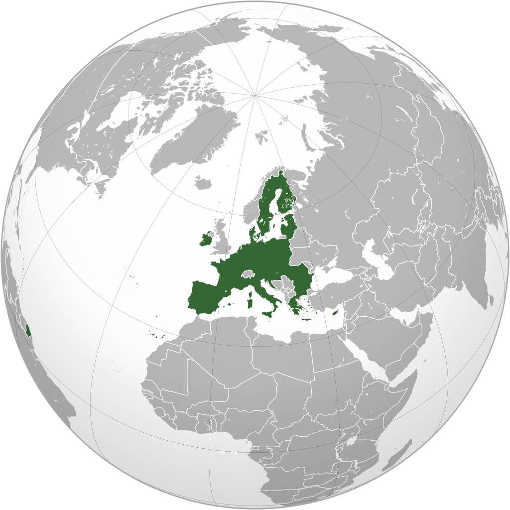
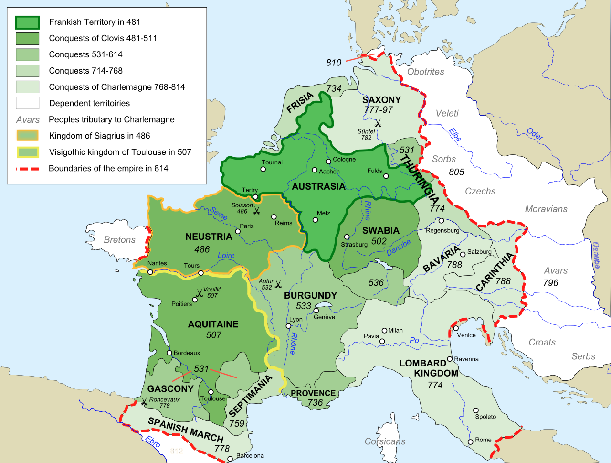
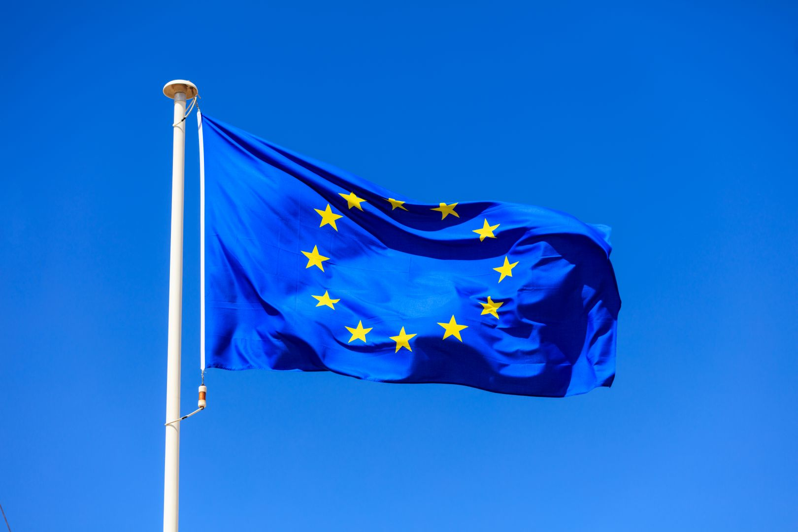
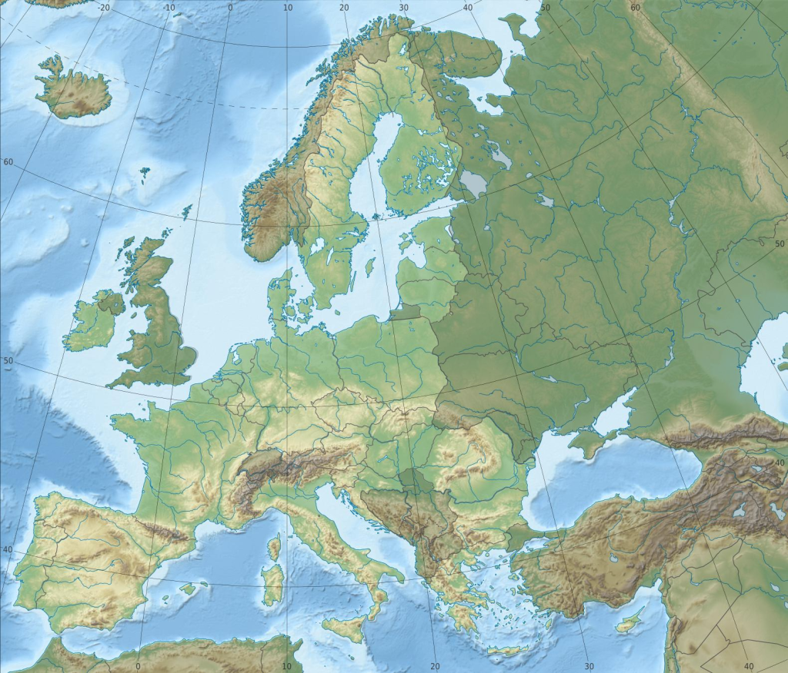
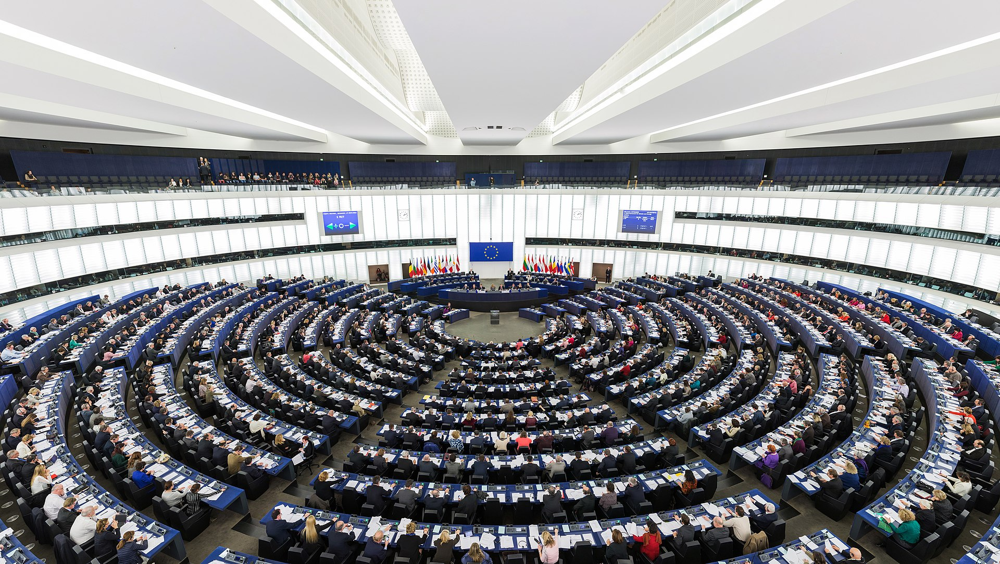
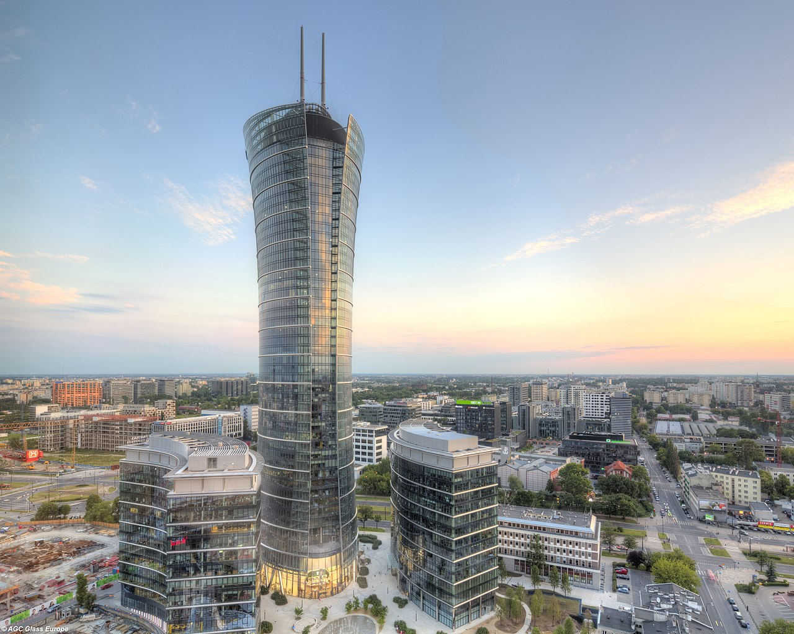
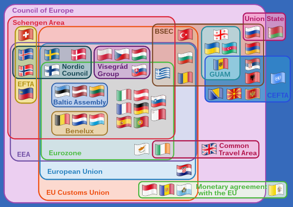

European Union
The European Union (EU) is a political and economic union of 27 member
states that are located primarily in Europe.The union has a total
area of 4,233,255.3 km2 (1,634,469.0 sq mi) and an estimated total
population of about 447 million. An internal single market has been
established through a standardised system of laws that apply in all
member states in those matters, and only those matters, where the
states have agreed to act as one. EU policies aim to ensure the free
movement of people, goods, services and capital within the internal
market; enact legislation in justice and home affairs; and maintain
common policies on trade, agriculture, fisheries and regional development.
Passport controls have been abolished for travel within the Schengen Area,
roaming charges also. A monetary union was established in 1999, coming into
full force in 2002, and is composed of 19 member states which use the euro
currency.

The union and EU citizenship were established when the Maastricht Treaty came
into force in 1993.[16] The EU traces its origins to the European Coal and Steel
Community (ECSC) and the European Economic Community (EEC), established,
respectively, by the 1951 Treaty of Paris and 1957 Treaty of Rome. The original
member states of what came to be known as the European Communities were the Inner
Six: Belgium, France, Italy, Luxembourg, the Netherlands, and West Germany. The
communities and their successors have grown in size by the accession of 21 new member
states and in power by the addition of policy areas to their remit. The latest major
amendment to the constitutional basis of the EU, the Treaty of Lisbon, came into force
in 2009. In 2020, the United Kingdom became the only member state to leave the EU.[17]
Before this, four territories of member states had left the EU or its forerunners.
History
During the centuries that followed the fall of Rome in 476, several European states viewed
themselves as translatio imperii ("transfer of rule") of the defunct Roman Empire: the Frankish
Empire (481–843) and the Holy Roman Empire (962–1806) were thereby attempts to resurrect Rome
in the West.This political philosophy of a supra-national rule over the continent, similar to
the example of the ancient Roman Empire, resulted in the early Middle Ages in the concept of
a renovatio imperii ("restoration of the empire"), either in the forms of the Reichsidee
("imperial idea") or the religiously inspired Imperium Christianum ("christian empire"). Medieval
Christendom and the political power of the Papacy have been cited as conducive to European
integration and unity.

In the eastern parts of the continent, the Russian Tsardom, and ultimately the Empire (1547–1917),
declared Moscow to be Third Rome and inheritor of the Eastern tradition after the fall of Constantinople
in 1453. The gap between Greek East and Latin West had already been widened by the political scission
of the Roman Empire in the 4th century and the Great Schism of 1054,[35][36][37] and would be eventually
widened again by the Iron Curtain (1945–1991) before the enlargement of the European Union towards
Eastern Europe since 2004 onward.
Demographics
Population
As of 1 January 2021, the population of the European Union was about 447 million people (5.8 per cent of
the world population). In 2015, 5.1 million children were born in the EU-28 corresponding to a
birth rate of 10 per 1,000, which is 8 births below the world average. For comparison, the EU-28 birth
rate had stood at 10.6 in 2000, 12.8 in 1985 and 16.3 in 1970.[81] Its population growth rate was positive
at an estimated 0.23 per cent in 2016.
Urbanisation
The EU contains about 40 urban areas with populations of over 1 million. With a population of over 13 million,
Paris is the largest metropolitan area and the only megacity in the EU. Paris is followed by Madrid, Barcelona,
Berlin, the Ruhr, Milan, and Rome, all with a metropolitan population of over 4 million.
Religion
Christians in the European Union are divided among members of Catholicism (both Roman and Eastern Rite), numerous
Protestant denominations (Anglicans, Lutherans, and Reformed forming the bulk of this category), and the Eastern
Orthodox Church. In 2009, the EU had an estimated Muslim population of 13 million,[114] and an estimated Jewish
population of over a million. The other world religions of Buddhism, Hinduism, and Sikhism are also represented
in the EU population.
Member states
Through successive enlargements, the European Union has grown from the six founding states (Belgium, France, West Germany,
Italy, Luxembourg, and the Netherlands) to 27 members. Countries accede to the union by becoming party to the founding
treaties, thereby subjecting themselves to the privileges and obligations of EU membership. This entails a partial
delegation of sovereignty to the institutions in return for representation within those institutions, a practice often
referred to as "pooling of sovereignty".

To become a member, a country must meet the Copenhagen criteria, defined at the 1993 meeting of the European Council in
Copenhagen. These require a stable democracy that respects human rights and the rule of law; a functioning market economy;
and the acceptance of the obligations of membership, including EU law. Evaluation of a country's fulfilment of the criteria
is the responsibility of the European Council. Article 50 of the Lisbon Treaty provides the basis for a member to
leave the EU. Two territories have left the union: Greenland (an autonomous province of Denmark) withdrew in 1985; the
United Kingdom formally invoked Article 50 of the Consolidated Treaty on European Union in 2017, and became the only
sovereign state to leave when it withdrew from the EU in 2020.
Geography
The European Union's member states cover an area of 4,233,262 square kilometres (1,634,472 sq mi).
The EU's highest peak is Mont Blanc in the Graian Alps, 4,810.45 metres (15,782 ft) above sea level.
The lowest points in the EU are Lammefjorden, Denmark, and Zuidplaspolder, Netherlands, at 7 m
(23 ft) below sea level. The landscape, climate, and economy of the EU are influenced by its coastline,
which is 65,993 kilometres (41,006 mi) long.

Including the overseas territories of France which are located outside the continent of Europe, but which are
members of the union, the EU experiences most types of climate from Arctic (north-east Europe) to tropical (French Guiana),
rendering meteorological averages for the EU as a whole meaningless. The majority of the population lives in areas with
a temperate maritime climate (North-Western Europe and Central Europe), a Mediterranean climate
(Southern Europe), or a warm summer continental or hemiboreal climate (Northern Balkans and Central Europe).
Politics
The European Union operates through a hybrid system of supranational and intergovernmental decision-making,
and according to the principles of conferral (which says that it should act only within the limits of the
competences conferred on it by the treaties) and of subsidiarity (which says that it should act only where
an objective cannot be sufficiently achieved by the member states acting alone). Laws made by the EU institutions
are passed in a variety of forms. Generally speaking, they can be classified into two groups: those which
come into force without the necessity for national implementation measures (regulations) and those which specifically
require national implementation measures (directives)

The European Union has seven principal decision-making bodies, its institutions: the European Parliament, the European
Council, the Council of the European Union, the European Commission, the Court of Justice of the European Union,
the European Central Bank and the European Court of Auditors. Competence in scrutinising and amending legislation is
shared between the Council of the European Union and the European Parliament, while executive tasks are performed by
the European Commission and in a limited capacity by the European Council (not to be confused with the aforementioned
Council of the European Union). The monetary policy of the eurozone is determined by the European Central Bank. The
interpretation and the application of EU law and the treaties are ensured by the Court of Justice of the European Union.
The EU budget is scrutinised by the European Court of Auditors. There are also a number of ancillary bodies which advise
the EU or operate in a specific area.
Home affairs and migration
Since the creation of the European Union in 1993, it has developed its competencies in the area of justice and home
affairs; initially at an intergovernmental level and later by supranationalism. Accordingly, the union has legislated
in areas such as extradition,family law, asylum law, and criminal justice. Prohibitions against
sexual and nationality discrimination have a long standing in the treaties. In more recent years, these have been
supplemented by powers to legislate against discrimination based on race, religion, disability, age, and sexual
orientation. By virtue of these powers, the EU has enacted legislation on sexual discrimination in the work-place,
age discrimination, and racial discrimination.

The EU has also established agencies to co-ordinate police, prosecutorial and immigrations controls across the member
states: Europol for co-operation of police forces,[193] Eurojust for co-operation between prosecutors, and Frontex
for co-operation between border control authorities.[195] The EU also operates the Schengen Information System which
provides a common database for police and immigration authorities. This co-operation had to particularly be developed
with the advent of open borders through the Schengen Agreement and the associated cross border crime.
Foreign relations
Foreign policy co-operation between member states dates from the establishment of the community in 1957, when member states
negotiated as a bloc in international trade negotiations under the EU's common commercial policy.[196] Steps for a more
wide-ranging co-ordination in foreign relations began in 1970 with the establishment of European Political Cooperation
which created an informal consultation process between member states with the aim of forming common foreign policies.
In 1987 the European Political Cooperation was introduced on a formal basis by the Single European Act. EPC was renamed
as the Common Foreign and Security Policy (CFSP) by the Maastricht Treaty.

The aims of the CFSP are to promote both the EU's own interests and those of the international community as a whole,
including the furtherance of international co-operation, respect for human rights, democracy, and the rule of law.
The CFSP requires unanimity among the member states on the appropriate policy to follow on any particular issue.
The unanimity and difficult issues treated under the CFSP sometimes lead to disagreements, such as those which occurred
over the war in Iraq.
Economy
As a political entity the European Union is represented in the World Trade Organization (WTO). EU member states
own the estimated second largest after the United States (US$105 trillion) net wealth in the world, equal
to around 20 per cent (~€60 trillion) of the US$36 trillion (~€300 trillion)[232] global wealth.[233]
19 member states have joined a monetary union known as the eurozone, which uses the euro as a single
currency. The currency union represents 342 million EU citizens.[234] The euro is the second largest
reserve currency as well as the second most traded currency in the world after the United States dollar.
[235][236][237] Of the top 500 largest corporations in the world measured by revenue in 2010, 161 had
their headquarters in the EU.[238] In 2016, unemployment in the EU stood at 8.9 per cent[239] while
inflation was at 2.2 per cent, and the account balance at −0.9 per cent of GDP. The average annual
net earnings in the European Union was around €24,000 (US$30,000)[240] in 2015.
Social policy and equality
The European Union has long sought to mitigate the effects of free markets by protecting
workers rights and preventing social and environmental dumping. To this end it has adopted
laws establishing minimum employment and environmental standards. These included the Working
Time Directive and the Environmental Impact Assessment Directive. The EU has also sought to
coordinate the social security and health systems of member states to facilitate individuals
exercising free movement rights and to ensure they maintain their ability to access social
security and health services in other member states. Social security main legislation is
found in the Equal Treatment in Occupational Social Security Directive 86/378, the Equal
Treatment in Social Security Directive 79/7/EEC, the Social Security Regulation 1408/71/EC
and 883/2004/EC and the Directive 2005/36/EC. The European Social Charter is the main body that
recognises the social rights of European citizens.